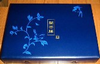

このサイトを覗いてくれてる人なら御存知の通り、いまキリンビールが「聞茶でハイハイプレゼント」というキャンペーンをやっている。140円のお茶に付いているシールで、当たりが出れば特製麻雀牌プレゼントするというキャンペーン。
特製ともなれば、食指も動く。しかしσ(-_-)は、クジ運が非常に悪い。そこで最初から諦めていた。すると最近ヤフーオークションに、当籤した人から商品として出品されるようになった。見るとブルーの箱が、なかなか綺麗。

牌そのものは、ごく普通の中国製樹脂牌。しかし牌の背中に、箱と伴柄の模様が描かれている。
（おう、これはなかなか綺麗ではないか。これなら１セットくらいあってもいいかな）と思った。しかし出品価格もなかなか高い。σ(-_-)の偏見による鑑定価格の倍以上する。とても手が出ないので指をくわえて見ていた。すると最近、別な人からも出品が相次ぎ、値段もかなり下がってきた。
それなら何とかと云うところだが、ここで気が変わった。“こんなに当たる人がいるなら、クジ運が悪いσ(-_-)でも、ひょっとしたらひょっとするかも....”
それにどうせσ(-_-)は麦茶を飲むではないか。
そこで聞茶ハイハイにチャレンジすることにした。そこでさっそくコンビニへ行き、聞茶を10本仕入れてきた。それでさっそく応募したが、なぜか聞茶が送られてこない....しかたないから、明日もまた10本ほど買いに行くことにした。う〜む、完全にキリンの思惑にハマってしまったな。（笑）
それはいいけれど、ヤフーのオークションを見ていて気になることが一つある。といっても聞茶牌とは関係ない。前にこのカテゴリーのNo．20「ヤフーオークション」でも書いたことであるが、材質の勘違いがかなり多い。一番多いのは象牙以外のものを象牙牌として出品しているケース。
アマチュアによる出品だから仕方ないとは思うけれど、牛骨を象牙と間違えるならともかく、牛骨以外の骨粉の練り牌を象牙だとして高額出品しているケースもある。
骨粉練り牌は、色も白くてなかなか綺麗。知らない人が見ると“象牙かも？”と勘違いするのも無理ないかも知れないが....また購入者にしても、その人も判らないだろうから多分トラブルにはならないのかも知れない。しかし万が一ということもある。それでそういう高額の間違い出品を見るとハラハラする....
前に “新象牙牌” を “象牙牌” として出品しているケースがあった（新象牙牌＝完全な合成樹脂であるが、象牙に似せて作った牌）。σ(-_-)には関係ないので黙っていようと思ったが、見るに見かねて出品者にメールした。文面は「これは象牙に似ていますが、たぶん新象牙牌と呼ばれるものだと思います。新象牙牌とは・・・・」というような内容。
すると「新象牙牌というものがあることは知っています。しかしこれは間違いなく象牙牌です」という返信があった。そう云われたのではどうしようもないので、それ以上、何も言わなかった。
別にウオッチングもしなかったので、その牌が落札されたのかどうかまったく知らない。しかし落札されたとしたら、あとでトラブルになっていないか、他人事ながら、ちと心配。。。。
|